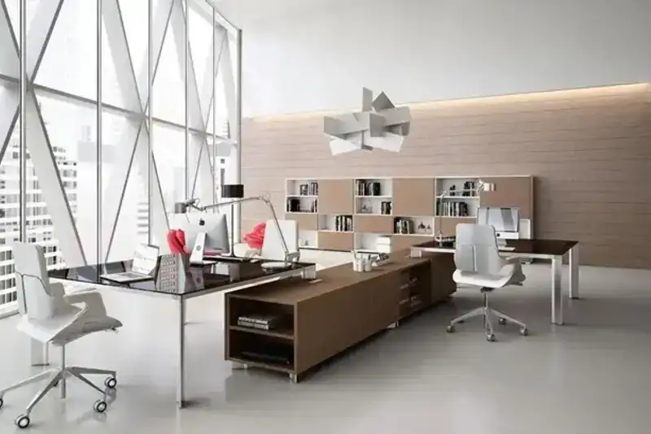

Daftar Isi
- Apa Itu Jasa Kontraktor Lemari Kantor?
- Kapan Kantor Membutuhkan Jasa Kontraktor Lemari Kantor?
- Mengapa Material Lemari Kantor Penting Diperhatikan?
- Bagaimana Cara Menghitung Estimasi Biaya Lemari Kantor Custom?
- Apa Saja Kesalahan Umum Saat Memesan Lemari Kantor Custom?
- Bagaimana Cara Memilih Kontraktor Lemari Kantor yang Tepat?
- FAQ
Jasa kontraktor lemari kantor adalah layanan desain dan pembuatan lemari custom untuk kebutuhan penyimpanan di ruang kerja, mulai dari lemari arsip, mobile drawer, hingga wardrobe executive dengan material dan ukuran sesuai kebutuhan ruangan.
- Jasa kontraktor lemari kantor mencakup survei, desain, produksi, hingga instalasi lemari custom.
- Material yang umum dipakai antara lain multiplex, blockboard, MDF, dan particle board dengan karakteristik kekuatan berbeda.
- Biaya dipengaruhi oleh jenis material, ukuran, sistem kunci, dan tingkat kerumitan desain.
- Memilih kontraktor yang tepat membutuhkan pengecekan portofolio, garansi, dan detail Rencana Anggaran Biaya (RAB).
- Tiga topik pendukung dalam silo ini membahas mobile drawer, material blockboard, dan estimasi biaya wardrobe executive secara lebih rinci.
Apa Itu Jasa Kontraktor Lemari Kantor?
Jasa kontraktor lemari kantor adalah penyedia layanan yang menangani seluruh proses pembuatan lemari kantor, mulai dari pengukuran ruangan, desain teknis, pemilihan material, produksi di workshop, hingga pemasangan di lokasi klien.
Berbeda dengan membeli lemari kantor siap pakai (ready stock), jasa kontraktor menawarkan penyesuaian ukuran, tata letak, dan fungsi sesuai kondisi ruang kerja yang sering kali tidak simetris atau memiliki keterbatasan sudut. Kontraktor umumnya juga menyediakan opsi finishing seperti High Pressure Laminate (HPL), melamic, atau duco sesuai anggaran dan gaya interior kantor.
Layanan ini biasa digunakan oleh kantor yang sedang renovasi, pindah kantor baru, atau ingin mengganti sistem penyimpanan lama yang sudah tidak efisien.
Kapan Kantor Membutuhkan Jasa Kontraktor Lemari Kantor?
Kebutuhan jasa kontraktor lemari kantor biasanya muncul saat ruang kerja direnovasi, dipindahkan, atau saat volume dokumen dan peralatan kerja sudah tidak tertampung oleh furnitur lama.
Beberapa situasi umum yang mendorong kantor menggunakan jasa ini antara lain:
- Ruang kerja memiliki sudut mati atau bentuk tidak standar yang sulit diisi furnitur pabrikan.
- Kebutuhan penyimpanan dokumen bertambah seiring pertumbuhan tim atau volume arsip.
- Kantor ingin tampilan interior yang konsisten dengan identitas brand, termasuk warna dan material lemari.
- Furnitur lama rusak, lapisan mengelupas, atau engsel dan rel laci tidak lagi berfungsi optimal.
Mengapa Material Lemari Kantor Penting Diperhatikan?
Pemilihan material menentukan daya tahan, bobot, dan biaya lemari kantor, sehingga menjadi salah satu keputusan paling penting sebelum memesan ke kontraktor.
Tiga material yang paling umum digunakan dalam pembuatan lemari kantor adalah multiplex, blockboard, dan MDF (Medium Density Fiberboard). Multiplex tersusun dari lapisan-lapisan veneer kayu yang direkatkan bersilangan arah serat, memberikan kekuatan merata ke segala arah dan tahan terhadap kelembapan bila dibandingkan particle board. Blockboard memiliki inti berupa potongan kayu solid berukuran kecil yang disusun berjajar lalu dilapisi veneer, membuatnya lebih ringan dari multiplex namun tetap kokoh untuk struktur lemari berukuran besar seperti wardrobe. MDF terbuat dari serat kayu yang dipadatkan dengan lem bertekanan tinggi, menghasilkan permukaan yang halus dan cocok untuk finishing cat duco, tetapi lebih rentan terhadap air dibanding dua material lainnya.
Menurut data dari Asosiasi Panel Kayu Indonesia (APKINDO) tahun 2023, permintaan panel kayu olahan seperti multiplex dan blockboard untuk kebutuhan furnitur komersial di Indonesia tumbuh rata-rata di atas 5% per tahun, seiring meningkatnya aktivitas renovasi ruang kerja pasca-pandemi.
Bagaimana Cara Menghitung Estimasi Biaya Lemari Kantor Custom?
Estimasi biaya lemari kantor custom umumnya dihitung berdasarkan luas permukaan lemari dalam meter persegi, dikalikan harga material dan tingkat kerumitan desain per meter.
Beberapa faktor yang memengaruhi total biaya antara lain:
- Jenis material inti (particle board, MDF, blockboard, atau multiplex).
- Jenis finishing (HPL, melamic, duco, atau veneer kayu asli).
- Sistem hardware seperti rel laci, engsel, dan kunci (manual, kunci sentral, atau digital).
- Tingkat kustomisasi, misalnya lemari dengan sudut khusus, laci beroda, atau partisi internal.
- Biaya pengiriman dan instalasi, terutama untuk lokasi di luar kota basis kontraktor.
Sebagai gambaran umum, kontraktor biasanya memberikan RAB (Rencana Anggaran Biaya) rinci per item sebelum produksi dimulai, sehingga klien dapat menyesuaikan spesifikasi dengan anggaran yang tersedia.
Apa Saja Kesalahan Umum Saat Memesan Lemari Kantor Custom?
Kesalahan paling umum saat memesan lemari kantor custom adalah tidak melakukan pengukuran ruang secara akurat dan tidak memperjelas spesifikasi material di awal kontrak kerja.
Kesalahan lain yang sering terjadi meliputi:
- Tidak meminta contoh material fisik sebelum produksi, sehingga hasil akhir berbeda dari ekspektasi.
- Mengabaikan detail hardware seperti jenis rel laci atau sistem kunci, padahal ini memengaruhi daya tahan jangka panjang.
- Tidak menanyakan garansi produk dan masa purnajual dari kontraktor.
- Terburu-buru memilih kontraktor termurah tanpa mengecek portofolio dan ulasan klien sebelumnya.
Bagaimana Cara Memilih Kontraktor Lemari Kantor yang Tepat?
Memilih kontraktor lemari kantor yang tepat dapat dilakukan dengan mengecek portofolio proyek sebelumnya, transparansi RAB, dan ketersediaan garansi purnajual sebelum menandatangani kontrak kerja.
Beberapa langkah praktis yang dapat dilakukan:
- Minta portofolio proyek dengan skala dan jenis kantor yang serupa dengan kebutuhan.
- Bandingkan RAB dari minimal dua hingga tiga kontraktor untuk melihat kewajaran harga.
- Tanyakan estimasi waktu pengerjaan dan konsekuensi bila terjadi keterlambatan.
- Pastikan ada garansi tertulis untuk struktur lemari dan hardware seperti rel laci atau engsel.